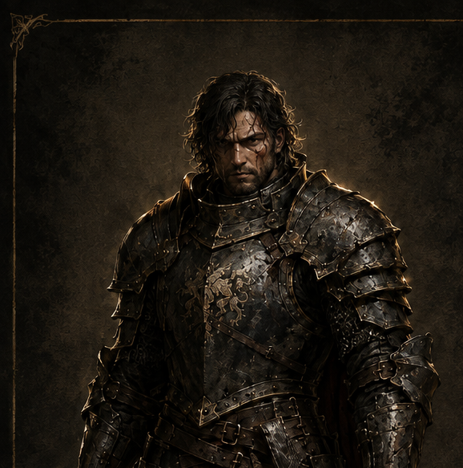
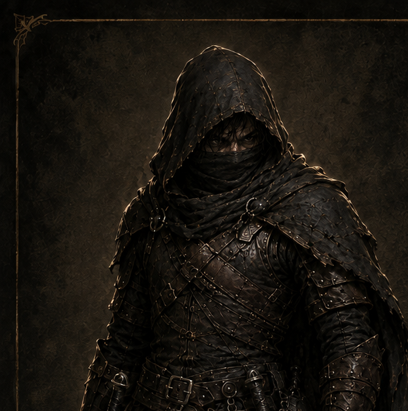
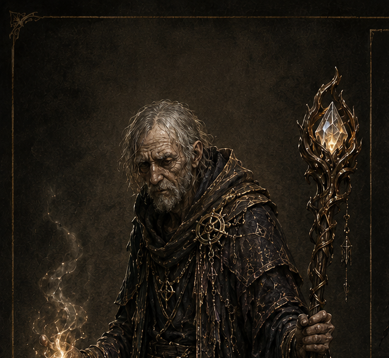
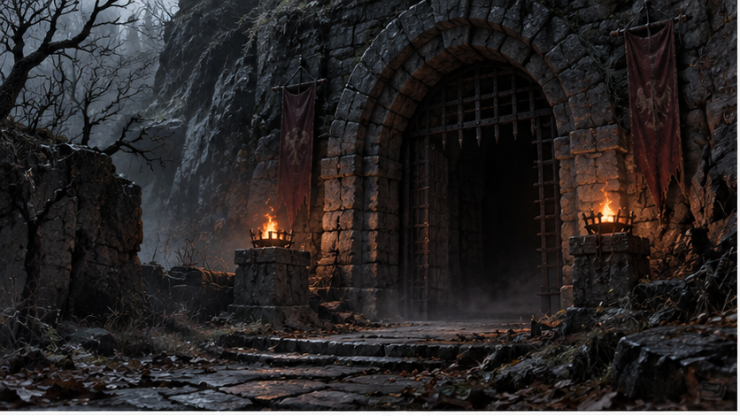
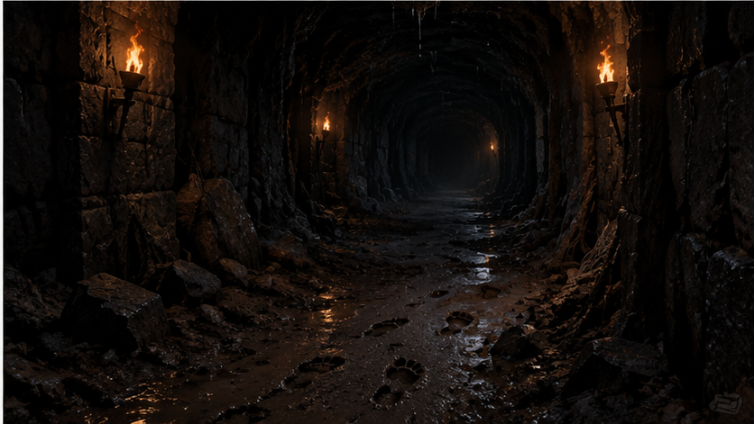
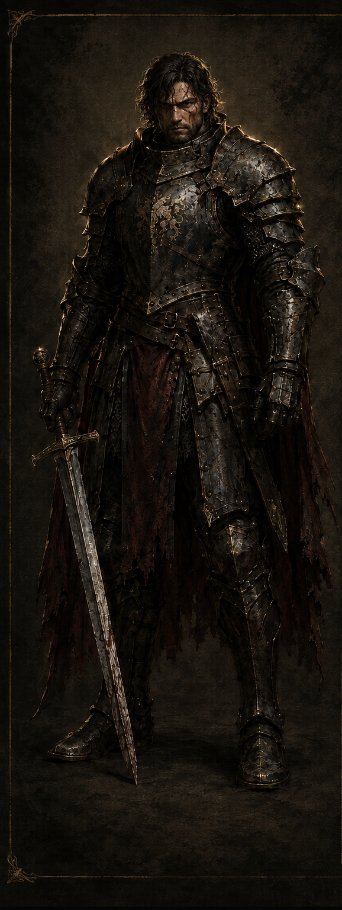
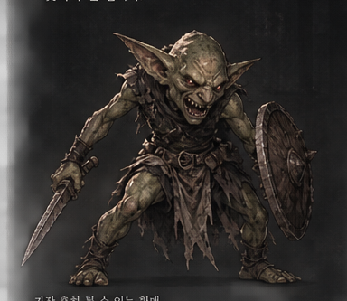

../02_ui_flow.md · ../03_screen_contract.md · ../07_visual_style.md(2026-09-04 보드게임 개정). 타이틀·직업선택·인벤토리·퀘스트·결과 화면은 나무 테이블(.wood)+양피지 카드 유지. 탐색·전투 화면은 v0.5부터 전체화면 배경(.fullbleed) 위에 가벼운 버튼(.btn-light)과 인물(전투는 .combatants)을 직접 얹는 방식으로 재구성..dungeon-title .rule)으로 디테일 추가. 버튼도 금속 각인 느낌(그라디언트 베벨 + 모서리 다이아몬드 장식)으로 강화. 나머지 화면들과 재질 언어를 처음부터 통일.


.inkmark, 2026-09-04)으로 "직접 골랐다"는 느낌을 줌.
.fullbleed), 그 위에 상태 한 줄·보드 타일·텍스트바·선택지 버튼이 반투명 레이어로 얹힘 — 양피지 카드 대신 가벼운 outline 버튼(.btn-light). 하단 그라디언트로 텍스트 가독성 확보. 나머지 4개 지역도 배경 이미지만 바꾸면 동일 레이아웃 재사용.


art-assets/scene_어두운통로.png) 위에 직접 세움 — 진짜 대립 구도. 인물 이미지는 가장자리를 마스킹 처리(mask-image)해 배경과 자연스럽게 섞이게 함(원본이 진짜 투명 PNG는 아니라서, 실제 구현 시 배경 제거 작업을 하면 마스킹 없이도 깔끔해짐). 고블린은 예시로 "약소형" 사용 — 실전엔 4변종 랜덤(DEC-114)..tcard 언어 — 선택지 카드와 시각적으로 같은 계열임을 즉시 알 수 있게. 아이콘은 실제 업로드된 투명 배경 물약 이미지로 연결됨.